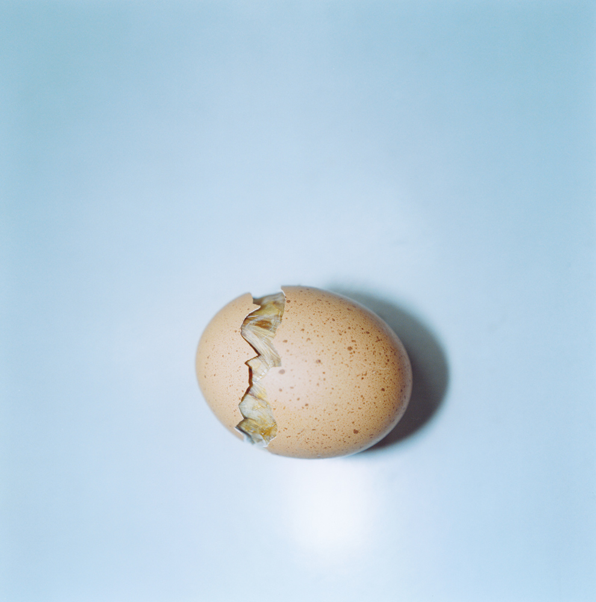
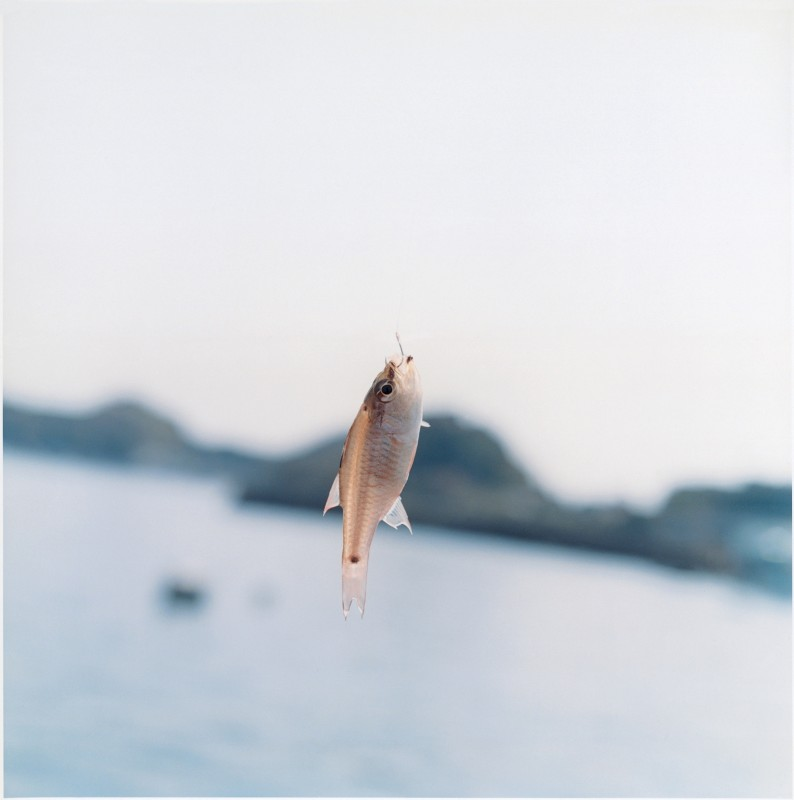

Ecover, Krapoto Basta, Terra Préserva
Après avoir rapidement traversé le Luxembourg, nous arrivons, deux jours après notre départ de Paris, en Belgique. L’excitation et l’agitation du départ font maintenant place à l’appréhension et aux premières inquiétudes. Quatorze mois à deux, n’est-ce pas un peu long ? Ne va-t-on pas s’ennuyer ou se taper dessus au bout de quelques semaines ? Va-t-on réussir à conserver le rythme des rencontres ? Allons-nous rester motivés jusqu’au bout ? La peur au ventre et perdus dans ces sombres pensées, nous filons sur les routes de Wallonie et arrivons à Malle, à quelques dizaines de kilomètres au nord de Bruxelles. L’objet de notre visite est de découvrir Ecover. Depuis plus de vingt ans, cette société fabrique et vend des produits d’entretien ménager, du liquide vaisselle à la lessive, dont l’impact sur l’environnement est bien plus faible que les produits traditionnels. Dès l’entrée dans les locaux, le ton est donné. Une grande fresque, peinte au-dessus du bureau de la standardiste, déclare : «It’s a wonderful world, pigs canfly, nuclear energy is safe...» 1 Au cas où nous en douterions encore, nous venons bien d’entrer dans les bureaux d’une entreprise militante.
1. Le monde est merveilleux, les cochons savent voler, l’énergie nucléaire est sûre.
Nous venons rencontrer Peter Malaise, un Belge chaleureux et bonhomme à la mine malicieuse. S’il n’est pas le fondateur de cette société atypique, il en est aujourd’hui le «gourou». Pionnier reconnu de ce secteur émergent, il s’est donné pour mission de produire et commercialiser des détergents écologiques en étant rentable, socialement responsable et écologiquement viable. Si vous pensez que c’est un vœu pieux ou pire, un hypocrite discours d’intention, Ecover nous a prouvé le contraire. Loin des discours bardés de bonnes intentions, affichés sans être appliqués, Ecover innove au jour le jour et prouve que des alternatives douces pour la terre et les hommes sont crédibles. Explications:
photograph: Rinko Kawauchi
Peter présente avec gravité les enjeux de son secteur d’activité. Il nous explique qu’une famille européenne utilise en moyenne, chaque année, quarante kilogrammes de lessive pour laver son linge et dix de poudre pour sa vaisselle. Jusqu’à 30 % de ces produits sont des phosphates, un élément chimique dont une trop forte concentration déséquilibre les milieux aquatiques 2. Il nous confie qu’à elle seule, «cette famille peut chaque année dévaster un lac d’une profondeur d’un mètre cinquante sur six hectares, et éliminer la totalité de sa faune marine». D’après lui, si dans les pays du nord de l’Europe de plus en plus de grandes marques éliminent les phosphates de leurs formules, elles le font uniquement lorsqu’elles y sont contraintes par la loi. En Europe du Sud et sur certains produits ayant échappé au législateur, c’est une autre histoire ! «Par exemple, nous confie-t-il, la majorité des tablettes pour lave-vaisselle utilisées en Europe contient encore 45 % de phosphates. »
2. Phénomène dit d’eutrophisation.
En 1979, révolté par les méfaits des géants de la chimie, un groupe de militants écologistes crée Ecover, dans une ferme du nord de la Belgique.
Au bout de quelques mois, ils trouvent un moyen de fabriquer des produits aussi efficaces que les grandes marques en diminuant drastiquement la contenance de résidus néfastes pour les milieux marins.
Aucun des composants des produits Ecover n’est dérivé du pétrole. Ce sont des enzymes naturelles génétiquement non modifiées qui fabriquent les ingrédients actifs. Les produits ne sont jamais testés sur des animaux (pratique généralisée dans le secteur) et seuls des parfums végétaux naturels, beaucoup moins dangereux pour la peau des clients, sont utilisés. Tout cela permet de rendre les résidus de détergents plus facilement assimilables par les milieux naturels. Résultat, 95 % des produits Ecover sont biodégradés (autrement dit disparus, avalés par la nature) au bout de vingt-huit jours. Et si la norme minimale pour obtenir l’appellation «biodégradable» dans l’Union européenne fixe ce taux à 60 %, la majorité des produits traditionnels atteint péniblement 35 %. Les liquides vaisselle Ecover tout en étant aussi efficaces sont quarante fois moins toxiques que les grandes marques leaders du marché !
photograph: Rinko Kawauchi
Et les produits Ecover se vendent très bien ! Convaincue par un discours militant mais réaliste, la clientèle se développe en Belgique et aux Pays-Bas. Au-delà des produits, l’objectif de Peter est de réduire considérablement l’impact global de son activité sur l’environnement. Ainsi, l’emballage est économe en matière et composé de carton ou de plastique 100 % recyclable. Une fois utilisées, les bouteilles peuvent être remplies de nouveau dans les points de vente spécialisés, pour réutiliser l’emballage indéfiniment.
En 1992, devant le succès que connaissent les produits et le développement rapide de la société, il faut construire un nouveau centre de fabrication. Tout est pensé pour en faire une usine «écologique». Elle est bâtie avec des matériaux propres, consomme un minimum d’énergie, retraite l’eau et les déchets au maximum et s’intègre parfaitement dans l’environnement local.
Les murs sont en briques issues de déchets de charbon, la consommation d’énergie est cinq fois moindre qu’une usine «traditionnelle» et 95 % des déchets sont réutilisés. Le toit recouvert de gazon permet de réguler la température en été comme en hiver et constitue un habitat de choix pour les oiseaux de la région. Enfin, un astucieux système de retraitement des eaux usagées permet à Peter de nous déclarer avec fierté : «L’eau qui sort de l’usine est plus propre que celle qui y rentre !» Douze ans après sa construction, elle reste un modèle de bâtiment propre et confortable et inspire de nombreux experts et architectes. Elle reçoit chaque année des centaines d’écoliers sensibilisés à l’écologie.
photograph: Rinko Kawauchi
Commercialisés dans des réseaux spécialisés et depuis trois ans dans les grandes surfaces, les produits d’Ecover sont vendus dans vingt-trois pays, de la Belgique aux États-Unis, de la France au Japon... Cette entreprise atypique réalise un chiffre d’affaires de 33 millions d’euros en 2003, en croissance de 12 à 15 % chaque année depuis cinq ans. La rentabilité est aussi excellente puisque le bénéfice net s’élève à presque trois millions d’euros. En Angleterre, alors que le marché est très concurrentiel et difficile à pénétrer, Ecover représente aujourd’hui 2 % des ventes de liquides vaisselle. L’entreprise peut pratiquer des prix similaires à ceux de ses concurrents car elle ne fait aucune publicité et mise tout sur le bouche-à-oreille. Seule entorse à cette stratégie, la société sponsorise depuis l’an 2000 le bateau de Mike Golding pour se faire un nom sur le marché français. Le voilier est chargé de communiquer les valeurs de la marque en participant à des régates prestigieuses telles que la route du Rhum et le Vendée Globe Challenge. Une entreprise rentable, dont les pratiques, de la construction d’usine jusqu’à la publicité, ne dégradent pas la planète, c’est donc possible!
photograph: Rinko Kawauchi
Peter Malaise, quant à lui, est réellement un iconoclaste... Décorateur de formation, il joue déjà les apprentis chimistes pour fabriquer ses propres peintures écologiques. Il se définit comme un post «soixante-huitard». Élevé dans une mentalité d’avant-guerre, il a souhaité remettre «l’imagination au pouvoir» et ne s’offusque pas de flirter avec un certain anarchisme. En 2002, c’est lui qui, en interne, a soutenu une idée des plus farfelues :
communiquer à ses clients et à ses concurrents la formule et la composition de ses produits. Son objectif était de tirer tout le secteur des détergents vers de meilleures pratiques écologiques.
Aimant les raisonnements de biais, il nous explique enfin que, s’il fallait donner une valeur monétaire à tous les éléments qui constituent le corps humain (principalement du carbone, de l’oxygène, et de l’hydrogène), il ne «vaudrait» que 60 centimes d’euros. «Et pourtant, rendez-vous compte du nombre de choses que l’on arrive à faire avec un corps» Tous nos raisonnements, notre manière d’inventer, de dessiner des produits et d’utiliser les ressources doivent s’inspirer du corps humain. Faire beaucoup avec pas grand-chose. Il nous invite en fait à être éco-effîcaces.
Et c’est urgent ! La présence inédite de six milliards d’êtres humains sur Terre impose de nouvelles façons de faire, de produire, de consommer et de penser notre modèle de développement. Elle impose en particulier de nouvelles formes d’entreprises. Peter nous a largement convaincus qu’Ecover en représentait une sincère et crédible.
Image de couverture par Rinko Kawauchi
texte extrait du 3e chapitre de «80 Hommes pour changer le monde» Entreprendre pour la Planète de S. Darnil et M. Le Roux